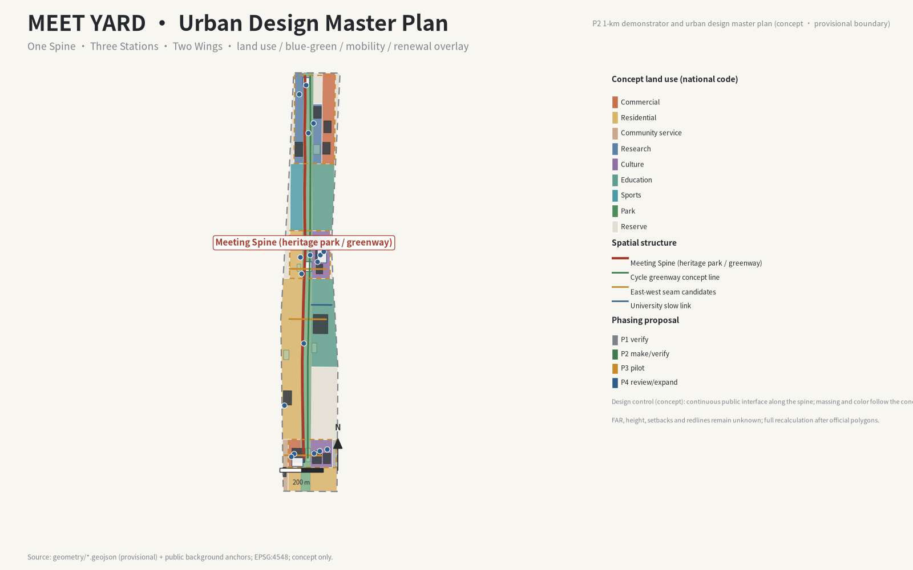

Overall Map · one spine, three stations, two wings
This is a static offline visual index. Text, metrics and status are sourced from metrics.json, manifest.json, self_check.json and visual/assets/data/ in the submission package. There are no remote scripts, maps, fonts, APIs or trackers. All spatial content is conceptual advice; the boundary is provisional and is not statutory planning.

assets/figures/site-overview.en.png; provisional.
Three-Level Scope
Numeric values are the current known values in metrics.json; announced areas are reference text and geometry remains provisional.
SCOPE-RESEARCH-0143,609,232.558 m²Coordinated research scope · announced reference ≈43.6 km²SCOPE-OVERALL-0111,412,825.386 m²Overall design scope · announced reference ≈11.4 km²SCOPE-KEY-013,692,893.005 m²Key areas total · announced reference ≈368.4 haSource files: geometry/constraints.geojson, geometry/site_boundary.geojson, geometry/key_areas.geojson. An official polygon requires a full recomputation, never patching.
Key Areas
The three stations are functional and relational advice, not approved parcels: Zhongzhiyuan Make, AI Origin Community Verify and Dazhongsi Trial. C01–C08 remain bound to S01–S14 and geometry/public_space.geojson; E01–E05 are subrecords or rendering constraints on existing objects.
AREA-ZZY-011,929,201.877 m²Zhongzhiyuan Make Station · conceptual 192.9 haAREA-ORIGIN-011,043,236.909 m²AI Origin Community Verify Station · conceptual 104.3 haAREA-DZS-01720,454.219 m²Dazhongsi Trial Station · conceptual 72.0 ha
key_areas.geojson, public_space.geojson; provisional.Land Use · Walking and Cycling · Blue-Green Public Space · Buildings and Renewal
LANDUSE-COVERAGE-011.0Land-use coverage · 100%MOBILITY-NETWORK-0120,757.4 mConcept walking/cycling networkSPINE-JZ-018,863.2 mConcept spine segment · not a precise alignmentBLUEGREEN-PUBLIC-012,176,274.715 m²Blue-green geometric union · green ratio 19.07%BLUEGREEN-PUBLIC-02185,906.049 m²Public-space plaza areaBUILDING-RENEWAL-01774,224.574 m²Conceptual building renewal groups
geometry/land_use.geojson; EPSG:4548; provisional.
roads, green_space, public_space; provisional.Buildings and renewal express research direction only; no FAR, height, ownership, demolition/retention or engineering conclusion is claimed.
AI Scenarios · 1-km Demonstrator and Street Sections
Fourteen scenario cards S01–S14 use the seven-step protocol: request, disclosure, cross-verification, human review, bounded trial, rollback and archive. S03 rider–robot handover retains manual dispatch and site coordination. The demonstrator and sections are explanation layers, not new sites or facilities.


Core Metrics
Machine source: 25 metrics, 19 known and 6 unknown. Unknown metrics stay empty and do not receive invented targets.
| metric_id | status | value | unit | source |
|---|---|---|---|---|
AREA-DZS-01 | known | 720,454.219 | sqm | geometry/key_areas.geojson |
AREA-ORIGIN-01 | known | 1,043,236.909 | sqm | geometry/key_areas.geojson |
AREA-ZZY-01 | known | 1,929,201.877 | sqm | geometry/key_areas.geojson |
BLUEGREEN-PUBLIC-01 | known | 2,176,274.715 | sqm | geometry/green_space.geojson + site_boundary |
BLUEGREEN-PUBLIC-02 | known | 185,906.049 | sqm | geometry/public_space.geojson |
BUILDING-RENEWAL-01 | known | 774,224.574 | sqm | geometry/buildings.geojson |
GOV-OBS-01 | unknown | — | index | measurement-protocol.json |
GOV-OBS-02 | unknown | — | ratio | measurement-protocol.json |
GOV-OBS-03 | unknown | — | index | measurement-protocol.json |
INCLUSION-SERVICE-01 | unknown | — | index | measurement-protocol.json |
LANDUSE-COVERAGE-01 | known | 1 | ratio | geometry/land_use.geojson |
MOBILITY-NETWORK-01 | known | 20,757.4 | m | geometry/roads.geojson |
OPS-WIN-01 | unknown | — | ratio | measurement-protocol.json |
OPS-WIN-02 | unknown | — | count | measurement-protocol.json |
SCOPE-KEY-01 | known | 3,692,893.005 | sqm | geometry/key_areas.geojson |
SCOPE-OVERALL-01 | known | 11,412,825.386 | sqm | geometry/site_boundary.geojson |
SCOPE-RESEARCH-01 | known | 43,609,232.558 | sqm | geometry/constraints.geojson |
SPINE-JZ-01 | known | 8,863.2 | m | geometry/roads.geojson |
site_area_sqm | known | 11,412,825.386 | sqm | geometry/site_boundary.geojson |
green_ratio | known | 0.190687 | ratio | geometry/green_space.geojson |
public_space_ratio | known | 0.0163 | ratio | geometry/public_space.geojson |
GOV-OBS-04 | known | 7 | count | meet-protocol.schema.json |
GOV-OBS-05 | known | 8 | count | meet-protocol.schema.json |
GOV-OBS-06 | known | 14 | count | meet-protocol-drill.json |
NODE-SCENARIO-01 | known | 3 | count | geometry/public_space.geojson |
Protocol and v1.8 Enhancements
GOV-OBS-04=7, GOV-OBS-05=8, deterministic drill drill_pass=14 / drill_total=14. MY-DEMO-001: Conceptual illustration, not a record of a real event / 概念示意，非真实事件记录; record_class=conceptual_illustration, evidence_eligible=false, demo_value=true.
| enhancement | parent objects and visual action | evidence and rollback | status |
|---|---|---|---|
v1.8-E01 Meet Yard Return Receipt | C07/C08 subrecord; show decision, changes, unresolved items and human next step | decision_log_id, archive_id; missing chain returns to manual work order | blocked |
v1.8-E02 Objection-and-Revision Record | C04/C08 subrecord; unresolved objection prevents verified | unresolved_objections + revision; return to C04/C07 | blocked |
v1.8-E03 Three-Minute Reproducible Meet | MY-DEMO-001 + seven-step protocol; replay one ID chain | 14/14 drill + replay_trace_id; broken chain is not rendered | blocked |
v1.8-E04 Human and Labour Impact Return | S03/C06/C07; aggregate waiting, takeover, accessibility and maintenance burden | Unresolved objection restores manual dispatch and site coordination | blocked |
v1.8-E05 Low-Bandwidth Meet Pack | One snapshot exported to offline page, paper card and manual window | offline_snapshot=true, snapshot_hash=metrics.json:29736e…, manual_channel; stale data returns to static explanation | blocked |
E01–E05 are enhancement subrecords on existing C04/C07/C08/S03/MY-DEMO-001. They add no landmark, component, scenario, metric group, GeoJSON layer or required output.
Task Coverage
compliance_matrix.json54 / 54matrix requirements registeredagent.1–631 / 31required outputsmanifest.json58registered filesChinese and English visual sets each contain 8 PNGs: site-overview, land-use-structure, key-areas, mobility-bluegreen, metrics-evidence, urban-design-masterplan, demonstrator-1km and street-sections.
Self-Check Status
package_stateready_for_reviewmanifest.jsonreview_statusformal-review-readylatest self_check.json recordvisual_gateUTF-8 · offlinererun all four gates after editsThis page and every v1.8 carrier are offline snapshots, not a live system. After any file change run render → refresh manifest → self-check → preflight; a fresh four-gate run is required before interpreting the package as ready for formal review.
Sources and Assumptions
Primary sources: official taskbook and announcement, data/source_registry.json, geometry/*.geojson, metrics.json, visual/assets/data/recompute-log.json, protocol schema and drill. CS01–CS08 remain pending in the case-source ledger.
Areas, lengths and ratios are provisional geometry or conceptual derivations; announced references and recomputed values are separated. Unknown metrics remain null/unknown. Governance decisions are never represented by color or a continuous light fixture. Paper/PDF and phone/manual access share the same snapshot; stale data rolls back to static explanation and manual service.